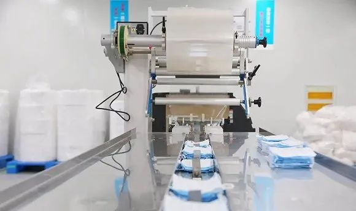
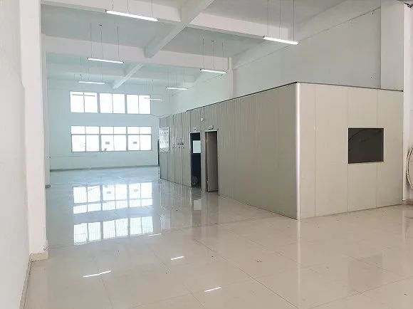
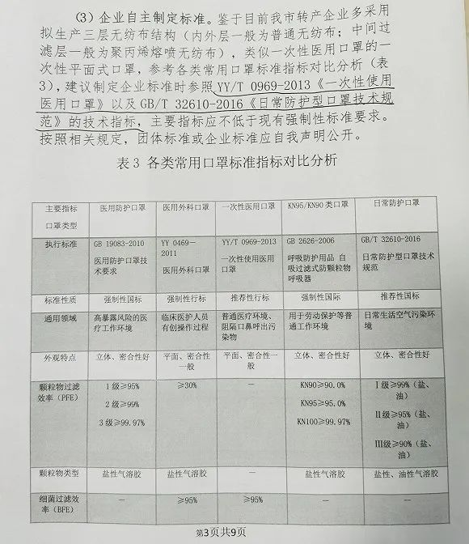

口罩“心脏”熔喷布这么缺，为什么厂商不借机上产线、扩产能？
原文链接 备份链接 图片来源：视觉中国 记者：彭强 “ 熔喷布设备供应周期更长，跨界生产的难度、要求和风险也更大。 ” “除了熔喷布，其他的都好说。”在某口罩货源共享交流群里，一位生产商这样表示。 该群里汇集了百余位口罩产业上下游的相关厂 …
记者：吴容 编辑：牙韩翔
“
周旋在寻找设备、采购原料以及申报批文之中，至今未转产出口罩。
”
30多天过去了，于国宏的公司还没转产出一枚口罩。
于国宏在福建从事建材生意，2月3日开始响应号召转产口罩之后，他一直周旋在寻找设备、采购原料以及申报批文之中，却接连陷入窘境。
“到现在，打了200多万元进去，几乎没有什么实质进展。”于国宏说。
都说隔行如隔山，何况是在疫情这样紧急关头短时间转产。在讨论初期，于国宏和公司几个合伙亲戚产生意见分歧，大家都不妥协的结果是，于国宏“不撞南墙不回头”，拉了十多人的团队自己单干。
打造一条完整的口罩生产线，除了需要洁净或无尘的车间，还需要口罩本体制造机及其他自动化设备。机器的作用主要是让三层无纺布焊贴成一片，在附上金属鼻夹、口罩带后，口罩大致成形，便可打包装箱发往市场。
除了公司场地可以派上用场，口罩设备材料均需要重新添置。只是于国宏没想到，实际难度超过了他的想象。
于国宏建材公司厂房。图片来源：采访对象
在口罩机上订购上，他就先栽了跟头。“我们没有人指导，只能自己在天眼查上一家家工厂去摸索，从供货期、价格以及性能等方面来筛选。”口罩设备厂在全国不超过100家，专业大厂少，且优先供应政府采购，于国宏先前锁定的7、8家工厂都一一回绝。
无奈之下，他和同事只好开始检索一些临时转产设备的工厂。经过近半个月来回折腾，终于敲定一家，“它以前没有生产过口罩机，我看规模还算过得去，有2000多人。”双方签订合同，每分钟生产80-100枚口罩的自动化设备协商价格是52万元，打包机等费用另付，交货日在3月8日。

口罩生产线。图片来源：澎湃
而打款几天之后，于国宏突然收到设备厂来电，称出于某些原因，设备产量没法达到每分钟100枚，只能保证每分钟80枚的水平。意识到自己被忽悠，于国宏很气愤，“三四十万元的自动化口罩机一般都能（每分钟）生产100枚，我花了50多万，当初签合同时就已经很委屈，又临时变卦……”
周围转产企业们购买设备的惨痛经历，让更多的忧虑浮上于国宏的心头。
“我认识的一个老板，残疾人，不太会用网购，花了13万块钱订口罩打包机，约定2月15号发货，等到快三月份了工厂还没发货。还有一个老板，花了四五十万买回来的口罩机根本都不能用，缺少一个零配件，机器就是一堆废铁，（工厂）不负责安装，也不负责维修，什么售后都没有。这个行业存在很多的坑、很大的风险。”于国宏说。
于国宏说的踩坑无数，体现在原材料熔喷布的采购上。常见的医用口罩，主要由三层无纺布组成。内层是普通无纺布，外层为做过防水处理的无纺布，最为重要的在于中间过滤层，需要用到聚丙烯制的熔喷布，用来防止细菌渗透。

口罩三层展示。
疫情前不过每吨2万左右的熔喷布，眼下市场价已飙升到每吨40万元，还“一布难求”。大公司如比亚迪也曾公开喊话，我有口罩机，没有熔喷布。
于国宏遇到更离谱的是，一个企业想拿一吨熔喷布和他们交换30万个口罩，按口罩零售单价3元计算，30万个口罩就是90万价值，意味着熔喷布每吨能炒到了90万元天价。
熔喷布价格疯涨，归根结底在于生产熔喷布企业的缺乏。
口罩需求量原来不大，全国生产医用熔喷布企业大约有20多家，且都是几十亿规模的大中企业，小企业则生产标准比较低的、用于民用口罩的熔喷布。疫情爆发在春节，这些企业复工复产也没及时跟上。此外，于国宏觉得，不排除流通过程之中有人囤积熔喷布，借机把价格抬高。
于国宏的团队里有一半人都在寻找熔喷布。除了企查查、天眼查，大家加了一些微信资源群进行求购，一看到有回应弹出，他们就迅速打电话联系。大多数时候，这些电话都没有什么希望。于国宏每天只睡4小时，凌晨2、3点躺下，6、7点又爬起来上网搜资源。

于国宏已对厂房车间进行整改，只待机器到货。图片来源：采访对象
终于，于国宏辗转多处打听到，北京一家公司从德国进口了300多吨熔喷布，立刻谈好30吨的口头合同，不料第二天对方拒绝发货，“他们有的业务员说已经卖掉了，有的人说出了问题，真实原因根本不知道是什么。我们加价也没用，反正无法交货。最后100万打款全退回来。”于国宏说。
“那公司这两天又和我说，未来几天又有货到。”于国宏感到被动却又无可奈何，还是打了90多万元过去。
不仅采购上经历一番大起大落，于国宏的相关生产批文至今也还没拿到手。
一次性口罩可粗略分为医用和民用两种。据于国宏的了解，医用口罩需要获批三个证，包括生产许可证、医疗器械注册证和食药监发的许可证。而民用口罩除生产许可外，要取得权威第三方检验机构的检验报告，同时包装上不得声称为医用口罩，无需办理医疗器械注册证。
“两个标准对设备、原料的要求基本一致，最主要差别在于，医用口罩对硬件设施要求高，必须用到至少10万级洁净车间，民用口罩的车间标准也不低，要进行无尘和灭菌处理。”于国宏说。

10万级洁净车间。图片来源：新浪
对转产企业而言，担心投入的成本打水漂，也希望能尽快获得市场准入，一般都会选择生产民用口罩，即按照GB/T 32610-2016 《日常防护型口罩技术规范》来生产，于国宏也不例外。
“以往民用口罩需要办理生产许可批文，现在当地市场监督管理局又好像说不要，目前到底要还是不要，我也没搞明白。”于国宏对此很困惑。

民用口罩技术标准。图片来源：采访对象
即便没有批文，于国宏也不太担心口罩的销路问题，眼下他已提前在线上接一些订单。
“福建泉州80%-90%的转产口罩企业没有拿到批文，我们这边有个上市公司同样如此。政府如果征收了，也就是默认你（可以生产）的意思。”等设备和原材料到货后，于国宏打算往高一点的生产标准靠拢，取得第三方检验报告。从长远来看，于国宏还是希望升级为医用口罩标准，因为他担心消费者不认可民用口罩。
过去20多天耗费了于国宏大量精力。比起大公司在资金动用、人脉资源上的快速协调，小企业大多举步维艰，免不了讨论投入成本。
“设备50多万，车间整改30-50万，原料备了100多万元。目前已经投入了200万。看样子，还要再备一些200万左右的原料。”粗略计算后，出于双保险考虑，于国宏又继续埋头寻找熔喷布资源。而顺利的话，距离他的口罩到达消费者手里，最少还要10天。
（应受访者要求，“于国宏”为化名）
未经授权 禁止转载

文章已于修改
原文链接 备份链接 图片来源：视觉中国 记者：彭强 “ 熔喷布设备供应周期更长，跨界生产的难度、要求和风险也更大。 ” “除了熔喷布，其他的都好说。”在某口罩货源共享交流群里，一位生产商这样表示。 该群里汇集了百余位口罩产业上下游的相关厂 …
原文链接 备份链接 20天上线口罩生产线，林芃遇到了很多转产防疫物资的同行，见识了原材料价格一天数变，还见识了借稀缺资源做起诈骗的人。他发了个朋友圈：这场疫情，像是一个放大镜，让我们发现，好人是真好，坏人是真坏，蠢人是真蠢，善良的人是真 …
原文链接 备份链接 口罩产量的大幅增长，让此前处于小众需求的口罩“心脏”熔喷布，成为市场争相采购的对象。该产品价格也从此前的2万元/吨，大幅飙升到现在的30万元/吨左右 文 |《财经》记者 张建锋 杨秀红 王颖 编辑 | 陆玲 “此时， …
原文链接 备份链接 澎湃新闻记者 李思文 实习生 夏梦洁 “熔喷布（价格）涨了10倍，耳带（价格）涨了5倍多。” 近日，浙江一家医用卫生产品生产企业的负责人如此告诉澎湃新闻，企业在满负荷生产的同时，也承担着成本翻倍的压力。其中，熔喷布作为 …
原文链接 备份链接 几乎无人愿意涉足成本高企的上游原材料市场 都挤在产业链下游“搏命” 2020年2月28日，工人们在四川祥和茂制衣口罩生产线上忙着生产口罩，保障市场供给。 中新社发 李建明 摄 新型冠状病毒肺炎疫情仍在持续。口罩、防护服 …